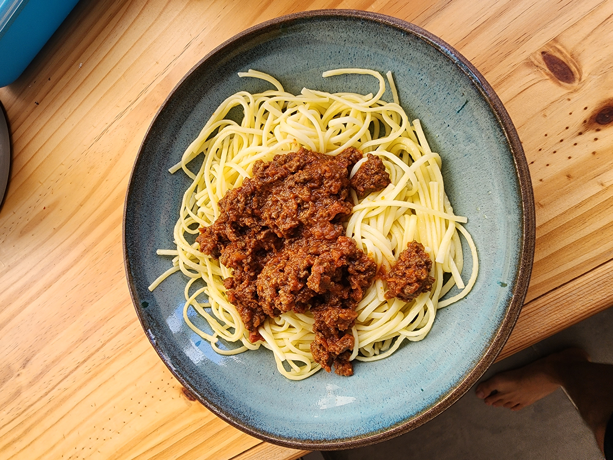

בולונז
זמן הכנה: 30 דקות
זמן המתנה: 60 דקות

רשימת מצרכים:
- קילו בשר טחון
- 3 שיני שום
- שמן זית
- קופסת עגבניות מרוסקות של mutti
- קופסת רסק עגבניות של mutti
- גזר יחיד גדול
תהליך הכנה:
- מכינים מראש
- מגרדים את הגזר לחתיכות קטנות
- טוחנים את העגבניות עד לקבלת מרקם אחיד חלק ומוסיפים כפית שטוחה של סוכר
- שלב א
- מחבת על אש גבוהה
- לשים במחבת שמן זית, להוסיף 2 שיני שום.
- להוסיף את הבשר הטחון, לפרק אותו לחתיכות קטנות ולטגן עד שמשנה צבע
- לתבל עם חצי כפית כורכום, מלח, פלפל שחור וצ'ילי
- לאחר שהבשר בגודל ובצבע הרצוי להוציא ולשים בצד
- שלב ב
- לשים באותה המחבת רבע כוס שמן זית, שן שום, ולהוסיף את קופסת הרסק
- להוסיף את העגבניות החתוכות וחצי כוס מים רותחים, לבשל עם מכסה סגור במשך 10 דקות על אש בינונית
- שלב ג
- להוסיף את הגזר וכפית שטוחה פפריקה
- להוסיף את הבשר הטחון
- להשאיר על אש נמוכה לכמה שיותר זמן, אפשר להוסיף עוד מים לקבלת רוטב פחות סמיך